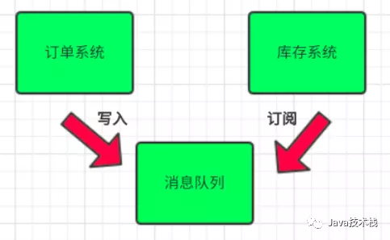
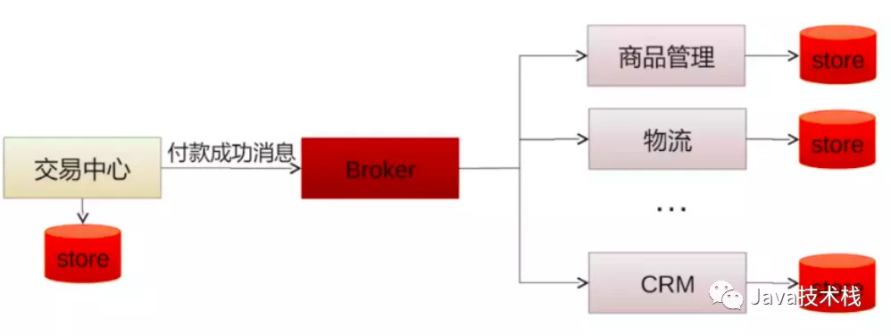
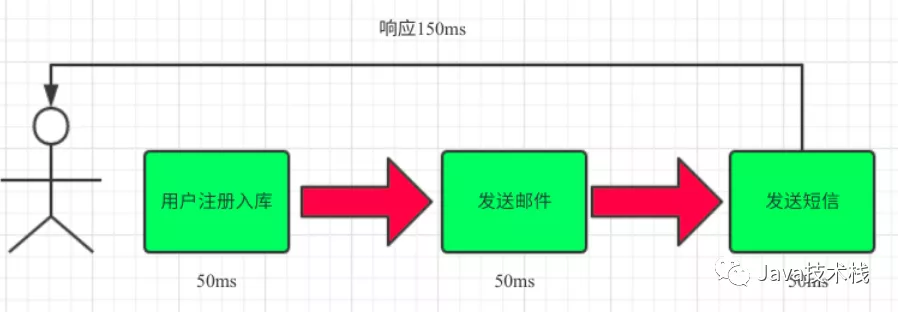
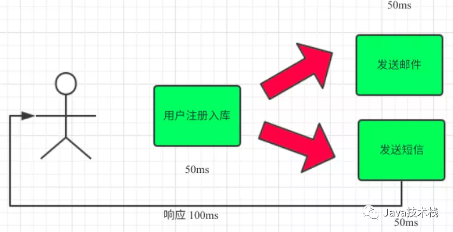
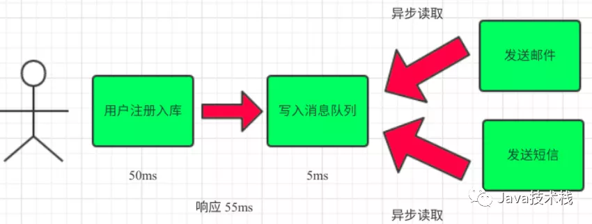

专业实践
技术选型
Redis
Redis（Remote Dictionary Server )，即远程字典服务，是一个开源的使用ANSI C语言编写、支持网络、可基于内存亦可持久化的日志型、Key-Value数据库，并提供多种语言的API。从2010年3月15日起，Redis的开发工作由VMware主持。从2013年5月开始，Redis的开发由Pivotal赞助。
定义
redis是一个key-value存储系统。和Memcached类似，它支持存储的value类型相对更多，包括string(字符串)、list(链表)、set(集合)、zset(sorted set –有序集合)和hash（哈希类型）。这些数据类型都支持push/pop、add/remove及取交集并集和差集及更丰富的操作，而且这些操作都是原子性的。在此基础上，redis支持各种不同方式的排序。与memcached一样，为了保证效率，数据都是缓存在内存中。区别的是redis会周期性的把更新的数据写入磁盘或者把修改操作写入追加的记录文件，并且在此基础上实现了master-slave(主从)同步。
Redis 是一个高性能的key-value数据库。 redis的出现，很大程度补偿了memcached这类key/value存储的不足，在部 分场合可以对关系数据库起到很好的补充作用。它提供了Java，C/C++，C#，PHP，JavaScript，Perl，Object-C，Python，Ruby，Erlang等客户端，使用很方便。
memcached是一套分布式的高速缓存系统，由LiveJournal的Brad Fitzpatrick开发，但被许多网站使用。这是一套开放源代码软件，以BSD license授权发布。
memcached缺乏认证以及安全管制，这代表应该将memcached服务器放置在防火墙后。
memcached的API使用三十二比特的循环冗余校验（CRC-32）计算键值后，将数据分散在不同的机器上。当表格满了以后，接下来新增的数据会以LRU机制替换掉。由于memcached通常只是当作缓存系统使用，所以使用memcached的应用程序在写回较慢的系统时（像是后端的数据库）需要额外的代码更新memcached内的数据。
Redis支持主从同步。数据可以从主服务器向任意数量的从服务器上同步，从服务器可以是关联其他从服务器的主服务器。这使得Redis可执行单层树复制。存盘可以有意无意的对数据进行写操作。由于完全实现了发布/订阅机制，使得从数据库在任何地方同步树时，可订阅一个频道并接收主服务器完整的消息发布记录。同步对读取操作的可扩展性和数据冗余很有帮助。
redis的官网地址，非常好记，是redis.io。（域名后缀io属于国家域名，是british Indian Ocean territory，即英属印度洋领地），Vmware在资助着redis项目的开发和维护。
性能
下面是官方的bench-mark数据：
测试完成了50个并发执行100000个请求。
设置和获取的值是一个256字节字符串。
Linux box是运行Linux 2.6,这是X3320 Xeon 2.5 ghz。
文本执行使用loopback接口(127.0.0.1)。
结果:读的速度是110000次/s,写的速度是81000次/s 。
常用命令
1 | # 注册服务 |
Mongodb
MongoDB是一个基于分布式文件存储的数据库。由C++语言编写。旨在为WEB应用提供可扩展的高性能数据存储解决方案。
MongoDB是一个介于关系数据库和非关系数据库之间的产品，是非关系数据库当中功能最丰富，最像关系数据库的。它支持的数据结构非常松散，是类似json的bson格式，因此可以存储比较复杂的数据类型。Mongo最大的特点是它支持的查询语言非常强大，其语法有点类似于面向对象的查询语言，几乎可以实现类似关系数据库单表查询的绝大部分功能，而且还支持对数据建立索引。
RabbitMQ
简介
MQ全称为Message Queue, 消息队列（MQ）是一种应用程序对应用程序的通信方法。应用程序通过读写出入队列的消息（针对应用程序的数据）来通信，而无需专用连接来链接它们。
消息传递指的是程序之间通过在消息中发送数据进行通信，而不是通过直接调用彼此来通信，直接调用通常是用于诸如远程过程调用的技术。排队指的是应用程序通过 队列来通信。队列的使用除去了接收和发送应用程序同时执行的要求。
RabbitMQ是使用Erlang语言开发的开源消息队列系统，基于AMQP协议来实现。AMQP的主要特征是面向消息、队列、路由(包括点对点和发布/订阅)、可靠性、安全。
AMQP协议更多用在企业系统内，对数据一致性、稳定性和可靠性要求很高的场景，对性能和吞吐量的要求还在其次。
使用场景
1. 解耦（为面向服务的架构（SOA）提供基本的最终一致性实现）
场景说明：用户下单后，订单系统需要通知库存系统。传统的做法是，订单系统调用库存系统的接口。
传统模式的缺点：
- 假如库存系统无法访问，则订单减库存将失败，从而导致订单失败
- 订单系统与库存系统耦合
引入消息队列

- 订单系统：用户下单后，订单系统完成持久化处理，将消息写入消息队列，返回用户订单下单成功
- 库存系统：订阅下单的消息，采用拉/推的方式，获取下单信息，库存系统根据下单信息，进行库存操作
- 假如：在下单时库存系统不能正常使用。也不影响正常下单，因为下单后，订单系统写入消息队列就不再关心其他的后续操作了。实现订单系统与库存系统的应用解耦
- 为了保证库存肯定有，可以将队列大小设置成库存数量，或者采用其他方式解决。
基于消息的模型，关心的是“通知”，而非“处理”。
短信、邮件通知、缓存刷新等操作使用消息队列进行通知。

消息队列和RPC的区别与比较：
RPC: 异步调用，及时获得调用结果，具有强一致性结果，关心业务调用处理结果。
消息队列：两次异步RPC调用，将调用内容在队列中进行转储，并选择合适的时机进行投递（错峰流控）
2. 异步提升效率
场景说明：用户注册后，需要发注册邮件和注册短信。传统的做法有两种
1.串行的方式；2.并行方式
（1）串行方式：将注册信息写入数据库成功后，发送注册邮件，再发送注册短信。以上三个任务全部完成后，返回给客户端

（2）并行方式：将注册信息写入数据库成功后，发送注册邮件的同时，发送注册短信。以上三个任务完成后，返回给客户端。与串行的差别是，并行的方式可以提高处理的时间

（3）引入消息队列，将不是必须的业务逻辑，异步处理。改造后的架构如下：

3. 流量削峰
流量削锋也是消息队列中的常用场景，一般在秒杀或团抢活动中使用广泛。关于秒杀系列文章可以关注公众号Java技术栈获取阅读。
应用场景：系统其他时间A系统每秒请求量就100个，系统可以稳定运行。系统每天晚间八点有秒杀活动，每秒并发请求量增至1万条，但是系统最大的处理能力只能每秒处理1000个请求，于是系统崩溃，服务器宕机。
之前架构：大量用户（100万用户）通过浏览器在晚上八点高峰期同时参与秒杀活动。大量的请求涌入我们的系统中，高峰期达到每秒钟5000个请求，大量的请求打到MySQL上，每秒钟预计执行3000条SQL。
但是一般的MySQL每秒钟扛住2000个请求就不错了，如果达到3000个请求的话可能MySQL直接就瘫痪了，从而系统无法被使用。但是高峰期过了之后，就成了低峰期，可能也就1万用户访问系统，每秒的请求数量也就50个左右，整个系统几乎没有任何压力。
引入MQ：100万用户在高峰期的时候，每秒请求有5000个请求左右，将这5000请求写入MQ里面，系统A每秒最多只能处理2000请求，因为MySQL每秒只能处理2000个请求。
系统A从MQ中慢慢拉取请求，每秒就拉取2000个请求，不要超过自己每秒能处理的请求数量即可。MQ，每秒5000个请求进来，结果只有2000个请求出去，所以在秒杀期间（将近一小时）可能会有几十万或者几百万的请求积压在MQ中。
这个短暂的高峰期积压是没问题的，因为高峰期过了之后，每秒就只有50个请求进入MQ了，但是系统还是按照每秒2000个请求的速度在处理，所以说，只要高峰期一过，系统就会快速将积压的消息消费掉。
我们在此计算一下，每秒在MQ积压3000条消息，1分钟会积压18万，1小时积压1000万条消息，高峰期过后，1个多小时就可以将积压的1000万消息消费掉。

引入消息队列的优缺点
优点
优点就是以上的那些场景应用，就是在特殊场景下有其对应的好处，解耦、异步、削峰。
缺点
- **系统的可用性降低
**系统引入的外部依赖越多，系统越容易挂掉，本来只是A系统调用BCD三个系统接口就好，ABCD四个系统不报错整个系统会正常运行。引入了MQ之后，虽然ABCD系统没出错，但MQ挂了以后，整个系统也会崩溃。 - **系统的复杂性提高
**引入了MQ之后，需要考虑的问题也变得多了，如何保证消息没有重复消费？如何保证消息不丢失？怎么保证消息传递的顺序？ - **一致性问题
**A系统发送完消息直接返回成功，但是BCD系统之中若有系统写库失败，则会产生数据不一致的问题。
总结
所以总结来说，消息队列是一种十分复杂的架构，引入它有很多好处，但是也得针对它带来的坏处做各种额外的技术方案和架构来规避。
引入MQ系统复杂度提升了一个数量级，但是在有些场景下，就是复杂十倍百倍，还是需要使用MQ。
Elasticsearch
Elasticsearch是一个基于Lucene的搜索服务器。它提供了一个分布式多用户能力的全文搜索引擎，基于RESTful web接口。Elasticsearch是用Java语言开发的，并作为Apache许可条款下的开放源码发布，是一种流行的企业级搜索引擎。Elasticsearch用于云计算中，能够达到实时搜索，稳定，可靠，快速，安装使用方便。官方客户端在Java、.NET（C#）、PHP、Python、Apache Groovy、Ruby和许多其他语言中都是可用的。根据DB-Engines的排名显示，Elasticsearch是最受欢迎的企业搜索引擎，其次是Apache Solr，也是基于Lucene。
Logstash
logstash是一种分布式日志收集框架，开发语言是JRuby，当然是为了与Java平台对接，不过与Ruby语法兼容良好，非常简洁强大，经常与ElasticSearch，Kibana配置，组成著名的ELK技术栈，非常适合用来做日志数据的分析。
当然它可以单独出现，作为日志收集软件，你可以收集日志到多种存储系统或临时中转系统，如MySQL，redis，kakfa，HDFS, lucene，solr等，并不一定是ElasticSearch。
Logstash is a tool for managing events and logs. You can use it to collect logs, parse them, and store them for later use (like, for searching).
ref: Logstash 最佳实践
Kibana
Kibana是一款开源的数据分析和可视化平台,它是Elastic Stack成员之一,设计用于和Elasticsearch协作。您可以使用Kibana对Elasticsearch索引中的数据进行搜索、查看、交互操作。您可以很方便的利用图表、表格及地图对数据进行多元化的分析和呈现。
OSS
阿里云对象存储服务，简称 OSS，是一种面向海量数据规模的分布式存储服务，具有稳定、可靠、安全、低成本的特点，能够提供十一个九的数据可靠性。OSS提供与平台无关的RESTful API接口，您可以在互联网任何位置存储和访问。OSS的容量和处理能力弹性扩展，并提供多种存储类型供您选择，全面优化存储成本。
Lombok插件
通过@Data注解的方式省去了我们平时开发定义JavaBean之后，生成其属性的构造器、getter、setter、equals、hashcode、toString方法；但是，在编译时会自动生成这些方法，在.class文件中。
笔记
NoSQL 与 SQL
1、数据存储方式不同。
关系bai型和非关系型数据库的主要差异是数据存储的方式。关系型数据天然就是表格式的，因此存储在数据表的行和列中。数据表可以彼此关联协作存储，也很容易提取数据。
与其相反，非关系型数据不适合存储在数据表的行和列中，而是大块组合在一起。非关系型数据通常存储在数据集中，就像文档、键值对或者图结构。你的数据及其特性是选择数据存储和提取方式的首要影响因素。
2、扩展方式不同。
SQL和NoSQL数据库最大的差别可能是在扩展方式上，要支持日益增长的需求当然要扩展。
要支持更多并发量，SQL数据库是纵向扩展，也就是说提高处理能力，使用速度更快速的计算机，这样处理相同的数据集就更快了。
因为数据存储在关系表中，操作的性能瓶颈可能涉及很多个表，这都需要通过提高计算机性能来客服。虽然SQL数据库有很大扩展空间，但最终肯定会达到纵向扩展的上限。而NoSQL数据库是横向扩展的。
而非关系型数据存储天然就是分布式的，NoSQL数据库的扩展可以通过给资源池添加更多普通的数据库服务器(节点)来分担负载。
3、对事务性的支持不同。
如果数据操作需要高事务性或者复杂数据查询需要控制执行计划，那么传统的SQL数据库从性能和稳定性方面考虑是你的最佳选择。SQL数据库支持对事务原子性细粒度控制，并且易于回滚事务。
虽然NoSQL数据库也可以使用事务操作，但稳定性方面没法和关系型数据库比较，所以它们真正闪亮的价值是在操作的扩展性和大数据量处理方面。